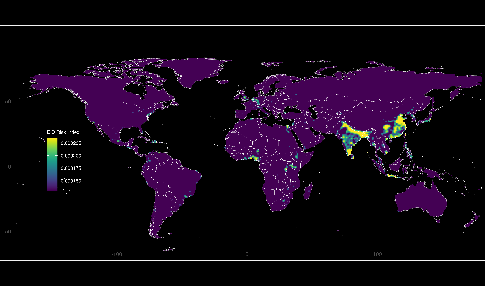
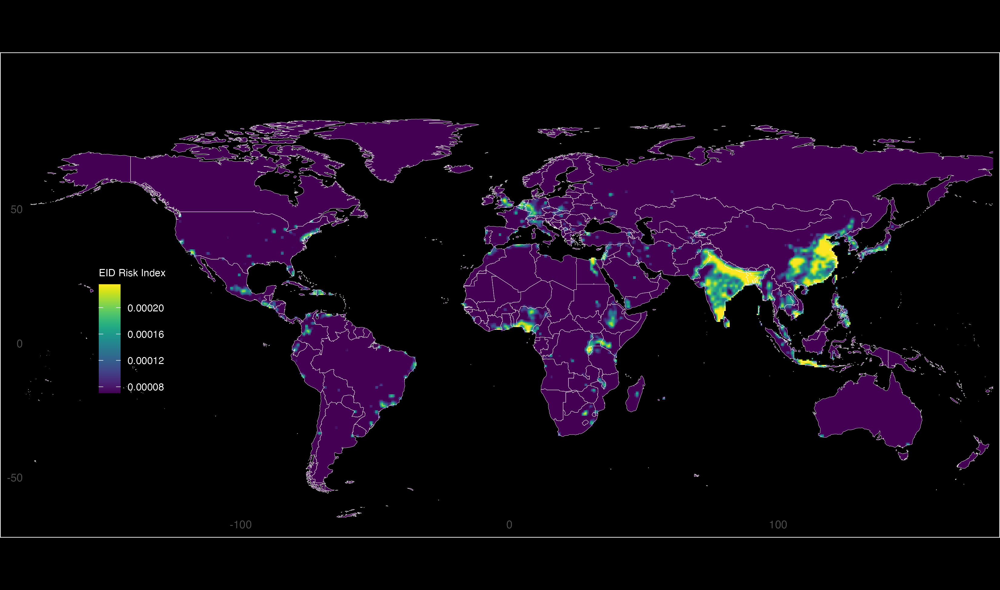
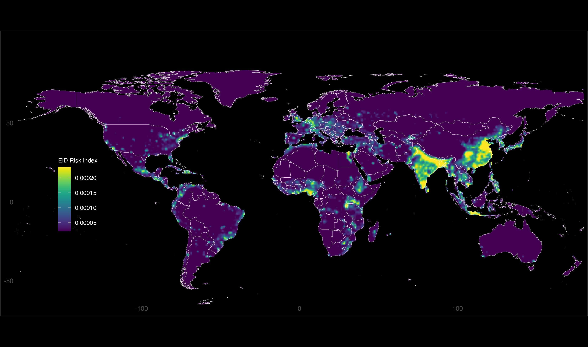

Threshold Maps for Infectious Disease Risk
This HTML file exports the upper-tail threshold maps derived from the Figure 3B infectious-disease workflow. The maps show the highest 5%, 10%, and 25% of the risk distribution.
Top 5%
Cells retained from the highest 5% of the histogram distribution.

Top 10%
Cells retained from the highest 10% of the histogram distribution.

Top 25%
Cells retained from the highest 25% of the histogram distribution.
